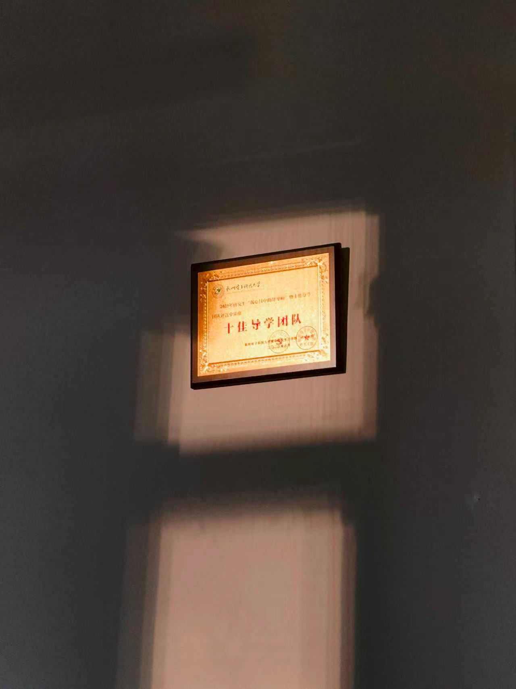
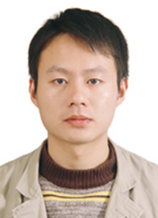

GLeVE 入选 MICCAI 2026 Best Paper Award & Young Scientist Award Shortlist
工作入选 Top 0.5% shortlist，并将在 Strasbourg 进行 Poster 4 展示。

杭州电子科技大学 · 计算机学院
三 维 视 觉 实 验 室
专注于人工智能、机器学习、计算机视觉与医学影像分析等前沿技术研究， 以三维之眼看见生命之光，致力于推动医疗 AI 技术的创新与应用。
发表论文
发明专利
科研项目
HDU-3DV实验室隶属于杭州电子科技大学计算机学院
HDU-3DV实验室现有教授2名，副教授1名，讲师1名，博士生导师2名，硕士生导师3名。 团队内教授为IEEE Fellow, AAIA Fellow, AAIA Fellow，浙江省顶尖人才， 担任多个国际期刊副主编和国际知名会议组织委员会和技术委员会成员。
实验室主要从事人工智能、机器学习、CAD、计算机视觉、图像处理、医学影像分析等相关研究。 在图形图像处理、模式识别、生成式人工智能、图神经网络、多模态大模型等方面有较好的研究工作积累。
SCI/EI论文
国家级省部级项目
省部级奖项
汇聚优秀人才，打造一流团队

教授、博士生导师
博士，教授，博士生导师，2014年毕业于浙江大学计算机学院CAD&CG全国重点实验室。 中国计算机学会、图象图形学学会会员、仪器仪表学会图像科学与工程分会理事。 2023年入选杭电钱江学者杰出青年人才计划，2024年入选浙江省级人才计划青年人才。 主要研究方向为人工智能、机器学习、CAD、计算机视觉、医学影像分析等。
副教授、硕士生导师
博士，副教授，硕士生导师。主要研究方向为信息安全、多媒体技术、软件工程。 信息安全领域包括密码算法理论研究和信息安全网络应用系统开发；多媒体技术包括图像、视频应用和数字水印研究； 软件工程与企业需求相结合的工作流和知识库系统的研究和开发。
讲师
杭州电子科技大学网络空间安全学院（浙江保密学院）讲师，浙江大学光学工程博士，曾任职于华为。 长期从事光学计算成像、自动对焦、智能图像处理、多媒体信息安全的研究工作， 对手机拍照ISP和智能汽车成像ISP具有丰富的工程研究经验。
记录实验室近期的论文发表、会议荣誉与研究进展
工作入选 Top 0.5% shortlist，并将在 Strasbourg 进行 Poster 4 展示。
面向儿童肿瘤辅助诊断的多尺度病理分析框架获得期刊接收。
形态感知肺血管分割工作在血管结构建模与细粒度识别方面取得进展。
面向红外图像去噪提出差分空间与差分通道注意力框架。
基于原型的多模态框架用于提升肿瘤生存预测的准确性与可解释性。
多模态病理图像与文本框架用于神经母细胞瘤亚型预测。
牙齿全景 X-ray 分割工作在 IEEE DLCV 2026 获得最佳论文荣誉。
边界表示生成工作入选 CVPR 2026，聚焦高保真三维几何表示学习。
工作提出无标注颅内出血分割框架，结合多亚型伪异常合成与测试时适应。
面向红外图像的多级隐式微分网络用于抑制噪声并恢复细节。
跨尺度交互框架用于红外小目标检测，兼顾长距离依赖与局部细节。
面向红外图像超分辨率，支持单一模型处理多种连续尺度。
欢迎学术交流与合作
浙江省杭州市钱塘区白杨街道2号大街1158号
杭州电子科技大学计算机学院
qinfeiwei@hdu.edu.cn
yuwenjing@hdu.edu.cn
如果您对我们的研究感兴趣，或希望开展合作，请通过以下方式联系我们：